번역 안내. 클래스·스킬·탤런트 이름 등 고유명사는 인게임 검색을 위해 영어 그대로 두었고, 설명만 한글로 옮겼습니다.
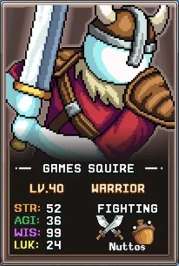
빌드 개요
가장 먼저 지혜(WIS)를 통해 최소 Accuracy(명중률) 요구치를 충족시킨 뒤, 아래 우선순위에 따라 무기 파워, 근력, 최대 체력을 통한 데미지에 투자합니다.
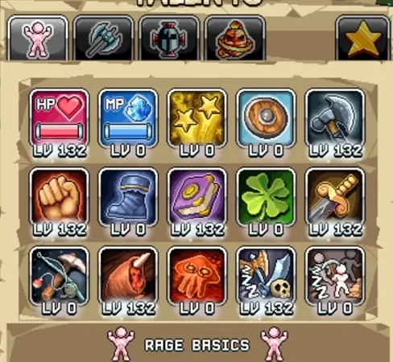
Warrior 탭 1 탤런트 빌드
다음 탭 1 스킬들을 우선순위에 따라 투자하십시오.
| 탤런트 | 효과 | 설명 |
|---|---|---|
 Book Of The Wise Book Of The Wise |
기본 WIS(지혜) 증가 | Warrior 클래스의 주요 Accuracy(명중률) 원천입니다. 현재 진행 중인 몬스터에 맞게 필요한 만큼 투자하십시오. 신규 플레이어는 World 1 보스 전투(레벨 30~35)까지 레벨당 1포인트씩 투자하는 것이 좋습니다. 그 이후부터는 계정 전체 Accuracy 보너스가 많아지므로 근력보다 덜 중요해집니다. |
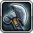 Sharpened Axe |
기본 무기 파워 증가 | 무기 파워는 초반 데미지의 주목할 만한 원천이며, 이후 % 데미지 부스트 탤런트들의 효과를 강화하는 기반이 됩니다. |
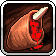 Meat Shank |
최대 체력의 10의 거듭제곱에 따라 % 데미지 증가 | 처음 10포인트가 매우 효율적입니다. 각 포인트당 1% 이상의 데미지를 제공하는 반면 Gilded Sword는 항상 탤런트 포인트당 1%입니다. 처음 10포인트를 투자한 후에는 아래의 Gilded Sword를 먼저 만레벨로 올린 뒤 이 탤런트로 돌아오십시오. |
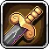 Gilded Sword |
주는 데미지 % 증가 | Sharpened Axe의 데미지 기반 위에 % 데미지 부스트가 강력하게 작용하며, 레벨당 일정하게 1%씩 증가합니다. |
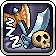 Idle Brawling |
전투 AFK 수익률 % 증가 | 핵심 데미지 탤런트를 갖춘 후 AFK(방치) 수익을 높여 전투 수익을 향상시키십시오. |
| Fists of Rage | 기본 STR(근력) 증가 | 근력 기반 클래스임에도 근력의 가치는 게임 중후반 근력 데미지 부스트나 추가 골드 획득 등의 유틸리티를 해금한 후에야 뚜렷해집니다. |
 Health Booster Health Booster |
최대 체력(HP) 증가 | Warrior의 데미지는 체력에 비례하므로, 탭 1의 마지막 데미지 원천입니다. |
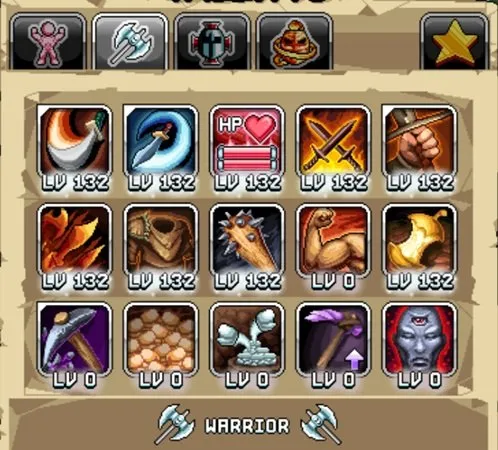
Warrior 탭 2 탤런트 빌드
다음 탭 2 스킬들을 우선순위에 따라 투자하십시오.
| 탤런트 | 효과 | 설명 |
|---|---|---|
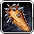 Carry A Big Stick |
무기 파워의 데미지 효과 % 증가 | 탭 2에서 가장 큰 데미지 원천입니다. 이 탤런트를 올리기 전에 Power Strike, Whirl, Double Strike, Firmly Grasp It에 각 1포인트씩 먼저 투자하는 것이 중요합니다. 이 탤런트들은 1포인트만으로도 매우 효과적이기 때문입니다. |
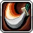 Power Strike |
앞의 몬스터를 베어 데미지를 입힘 | Active(직접 플레이) 콘텐츠에 유용하며 공격 바에 배정 시 AFK 수익도 증가합니다. AFK 수익 효율이 줄어드는 기준점인 50포인트까지 Power Strike, Whirl, Double Strike에 각각 투자한 후, 다른 우선순위 탤런트를 모두 올린 다음 이 탤런트들을 만레벨로 올리십시오. |
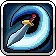 Whirl |
주변 몬스터를 향해 무기를 휘두르며 데미지를 입힘 | Power Strike와 동일하게 취급하십시오. |
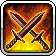 Double Strike |
기본 공격이 2회 타격할 % 확률 증가 | 공격 바에 배정할 필요는 없지만 AFK 수익을 높여줍니다. 마찬가지로 50포인트를 기준으로 삼으십시오. |
 Firmly Grasp It Firmly Grasp It |
일시적으로 STR 증가 | 첫 1포인트에서 16 근력을 제공하는 반면 이후 포인트는 1 근력씩만 추가되어 Absolute Unit과 동등해집니다. 처음에는 1포인트 투자 후 공격 바에 배정하십시오. |
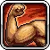 Absolute Unit |
기본 STR(근력) 증가 | Firmly Grasp It과 유사하게 근력을 제공하여 Warrior 데미지 출력을 높입니다. |
 Health Overdrive Health Overdrive |
최대 체력 % 증가 | Warrior 데미지로 이어지는 체력 원천이지만, 먼저 만레벨로 올려야 할 근력 기반 탤런트들보다는 효과가 작습니다. |
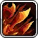 Strength in Numbers |
STR의 데미지·체력 효과 % 증가 | 늘어나는 근력 풀을 더욱 증폭시키므로 근력이 많아진 이후에 투자하는 후반 우선순위 탤런트입니다. |
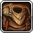 'Str'ess Tested Garb |
장비의 STR % 증가 | 장비의 근력 수치가 게임 후반부까지는 낮으므로 가장 낮은 우선순위입니다. 이것을 만레벨로 올린 후에는 기존에 50포인트에서 멈췄던 Power Strike, Whirl, Double Strike를 만레벨로 올리십시오. |
 Haungry For Gold Haungry For Gold |
황금 음식 보너스 증가 | 여러 황금 음식이 데미지 증가 등 유틸리티를 제공하므로, 후반 게임에서 많은 황금 음식을 쌓고 여유 음식 슬롯이 있을 때 유용합니다. |